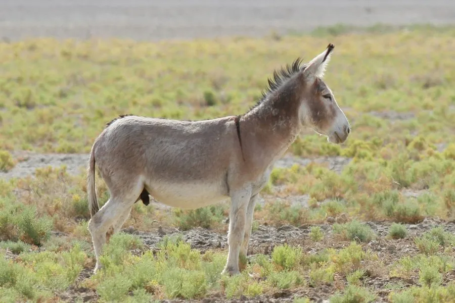

哺乳动物 · 动物界
驴 Equus asinus

由非洲野驴驯化而来的役用家畜，耳长、鬃毛短立、尾端有毛帚，耐粗饲、抗病力强，在干旱地区承担驮运与耕作数千年。
- 分类
- 门脊索动物门纲哺乳纲目奇蹄目科马科属马属
- 栖息环境
- 干旱与半干旱的农区、牧区、山地村落及高原牧场
- 地理分布
- 全球家养，以中国、埃塞俄比亚、墨西哥、巴基斯坦等地数量最多
- 保护级别
- IUCN 未评估（家养动物）；其祖先非洲野驴为极危（CR）
物种志
驴体形比马小，成年体高 1.0–1.5 米，体重 150–350 千克，四肢细而结实，蹄质坚硬。头部较大，耳长而直立，可灵活转动收集声音；颈短，鬃毛短而直立，不似马鬃披垂；尾细长，末端有一簇长毛。毛色多为灰褐、黑褐或青灰，腹部与口鼻周围浅白，许多个体肩背有深色十字纹。
驴由非洲野驴驯化而来，驯化历史约五六千年，长期作为干旱与半干旱地区的役畜，用于驮运、耕作、拉车和骑乘。它耐粗饲、耐渴、抗病力强，能在高温缺水的环境中连续劳作；性情谨慎固执，遇到危险时往往先停步观察而不轻易逃窜。驴的叫声洪亮悠长，可传出数公里，是群体间联络的信号。母驴孕期约 11–12 个月，每胎一仔，寿命可达 30 年以上。如今部分地区的驴因阿胶需求被大量屠宰，种群数量引发关注。
形态与习性
- 体高约 1.0–1.5 m，体长 1.5–2.0 m
- 体重约 150–350 kg
- 食性粗饲草、秸秆、谷类，耐粗饲且需水量低
- 繁殖孕期约 11–12 个月，每胎一仔，多春季产驹
- 寿命约 25–30 年，饲养良好可超过 40 年
- 驯化历史约 5000–6000 年前由非洲野驴驯化而来
- 叫声洪亮悠长的“咴—昂”声，可传出 2–3 km
趣味知识
- 驴的耳朵比马长得多，能各自转动，捕捉不同方向的声音。
- 它耐渴能力出众，可数天不饮水仍能驮运重物。
- 驴遇到危险时常常停下不动、盯着对方看，被误解为“倔”。